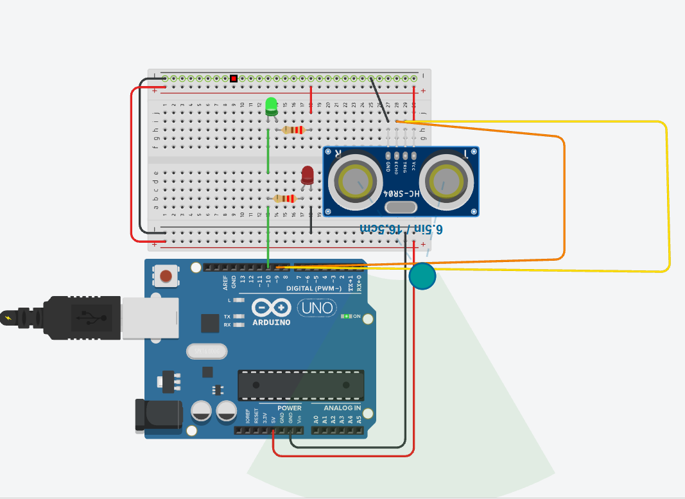
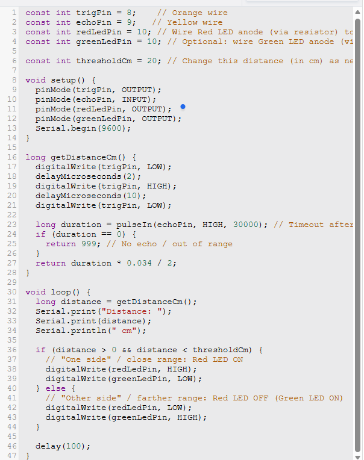

from pathlib import Path
from bs4 import BeautifulSoup
import re, html
base = Path("/mnt/data")
source_path = base / "Pasted text(10).txt"
source = source_path.read_text(encoding="utf-8")
soup = BeautifulSoup(source, "html.parser")
# Pull the existing firmware exactly as shown on the current website.
code_node = soup.select_one("#arduinoCode")
arduino_code = code_node.get_text() if code_node else ""
if not arduino_code.strip():
raise ValueError("Could not locate the Arduino code in the current website.")
# Reuse the current website's project content, reorganized into the school's plain HTML structure.
new_html = r'''
Traffic Light Warning System
Intersections are among the higher-risk areas on roadways because drivers must respond to changing traffic
signals, nearby vehicles, and limited visibility. This project demonstrates an Arduino-based traffic light
warning prototype that uses an ultrasonic sensor to measure the distance to an approaching object and provides
visual and audible alerts through LEDs and a buzzer.
Project Goals
Real-time proximity detection: Measure the distance of an approaching object using an
HC-SR04 ultrasonic sensor.
Visual warnings: Use red, yellow, and green LEDs to indicate different distance ranges.
Audible alerts: Use different buzzer tones to communicate caution and danger conditions.
Affordable prototype: Demonstrate the concept with commonly available Arduino components.
Success Criteria
The prototype identifies the programmed distance ranges consistently during repeated tests.
The LEDs and buzzer respond to sensor readings with minimal delay.
The circuit operates using standard Arduino USB power.
Project Constraints, Risks & Contingency Plans
Time constraint: The project schedule limits testing to a controlled tabletop prototype.
Alternative: Complete the basic sensor and LED functions before adding optional features.
Budget constraint: The project must use affordable, readily available components.
Alternative: Use common Arduino-compatible parts and reusable prototyping materials.
Sensor reliability: Angled or soft surfaces can reflect or absorb ultrasonic sound, causing
inaccurate readings.
Alternative: Adjust the sensor position and ignore invalid readings in the code.
Hardware failure: Loose wires or damaged components can interrupt the demonstration.
Alternative: Test each component separately and keep spare jumper wires and LEDs available.
Circuit Diagram
The HC-SR04 sensor sends an ultrasonic pulse and measures the time required for the echo to return. The Arduino
converts this duration into a distance measurement and controls the LEDs based on the programmed threshold.

The circuit uses an Arduino Uno, an HC-SR04 ultrasonic sensor, red and green LEDs, current-limiting resistors,
and jumper wires. The sensor's trigger and echo pins connect to the Arduino digital pins defined in the firmware.
Environmental Impact Assessment
The prototype uses low-voltage electronic components and reusable development hardware. Arduino boards,
breadboards, sensors, LEDs, and jumper wires can be reused in later projects, reducing the need to discard
components after a single demonstration.
Energy use: The prototype is powered by the Arduino's USB connection and uses low-power
indicator LEDs and an ultrasonic sensor.
Material use: Reusable breadboards and jumper wires reduce soldering waste and make
disassembly easier.
Electronic waste: Components should be reused where possible and disposed of through
appropriate electronic-waste collection when they reach end of life.
Bill of Materials (BoM)
Item
Quantity
Purpose
Arduino Uno
1
Main microcontroller
HC-SR04 Ultrasonic Sensor
1
Measures distance to an approaching object
Red LED
1
Indicates the close/danger range
Green LED
1
Indicates the farther/safe range
Resistors
As required
Limit current through the LEDs
Breadboard
1
Allows components to be connected without soldering
Jumper Wires
As required
Connect the components
USB Cable
1
Power and program the Arduino
Note: Quantities and component descriptions reflect the prototype circuit shown. Confirm final purchase prices
and quantities against the parts actually used by the team.
Prototype
The following image shows the Tinkercad breadboard layout used to plan the prototype circuit.
Arduino Code
The Arduino code reads the distance measured by the HC-SR04 sensor, prints the measurement to the Serial Monitor,
and switches the red and green LEDs depending on whether the measured distance is below the threshold.

__CODE_PLACEHOLDER__
Conclusion & Reflections
This project demonstrates how an Arduino Uno and an HC-SR04 ultrasonic sensor can measure the distance to an
approaching object and use LEDs to communicate a simple warning state. The prototype provides practical
experience with sensor wiring, digital input and output, distance calculations, and conditional programming.
What We Learned
How ultrasonic sensors use sound pulses and echo timing to estimate distance.
How to connect LEDs and resistors to Arduino digital output pins.
How to use conditional statements to change system behaviour based on sensor measurements.
How to test a circuit in Tinkercad before assembling physical hardware.